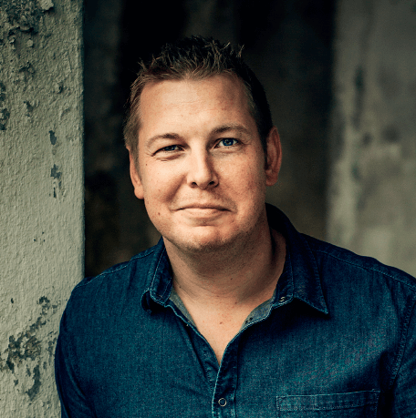

Уве — угрюмый одинокий пожилой мужчина. Он считает, что его окружают, преимущественно, тупые соседи, неспособные припарковаться, вечно щебечущие продавцы в магазинах и бюрократы, портящие нормальным людям жизнь. Как тут спокойно помереть, когда вокруг одни идиоты? Уве только что отправили на пенсию, а полгода назад умерла жена Соня. Когда новые соседи случайно сносят почтовый ящик Уве, это становится началом трогательной истории об утраченной любви, неожиданной дружбе, бездомной кошке и искусстве сдавать назад на автомобиле
с прицепом. История о том, как сильно жизнь одного человека может влиять на жизнь других

Фредрик Бакман (швед. Fredrik Backman; род. 2 июня 1981, Хельсингборг) — шведский писатель, блогер, колумнист.
Дебютировал в 2012 году, выпустив одновременно два романа: En man som heter Ove («Вторая жизнь Уве») и Saker min son behöver veta om världen («Вещи, которые моему сыну следует знать о мире»). Его книги переведены и издаются на более чем 25 языках мира.
В России издательством «Синдбад» были выпущены семь романов Бакмана: «Вторая жизнь Уве», «Бабушка велела кланяться и передать, что просит прощения», «Здесь была Бритт-Мари», «Медвежий угол», «Что мой сын должен знать об устройстве этого мира», «Мы против вас», «Тревожные люди», а также три новеллы:«Сделка всей жизни», «И с каждым утром дорога домой становится всё длиннее» и «Себастиан и тролль».
Фильм по роману «Вторая жизнь Уве» получил положительные отзывы кинокритиков, вошёл в список самых популярных кинофильмов Швеции всех времён и получил ряд премий, а также 2 номинации на премию «Оскар» 2017 года как «Лучший фильм на иностранном языке» и «Лучший грим и причёски».